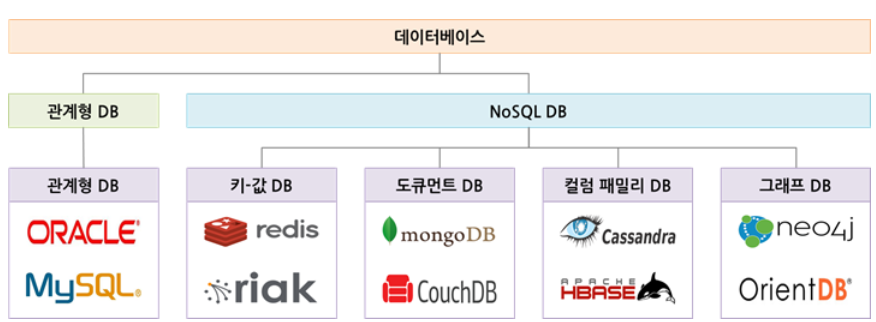
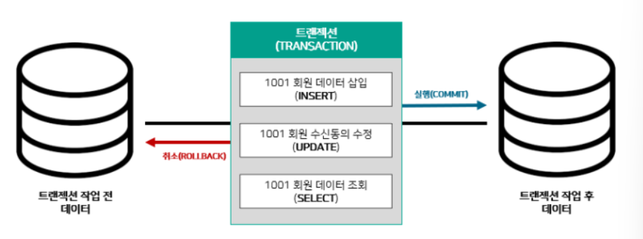

1강. SQL 기본 구조
관계형 데이터 베이스
SQL 및 데이터 베이스
Structured Query Language - 관계형 데이터 베이스가 이해할 수 있는 구조화된 질의어
웹 or 모바일 데이터 -> 관계형 데이터 베이스 -> 각자 직무에 필요한 데이터 추출해 보고서 작성
RDB - 관계형 데이터 베이스
행과 열로 구성된 테이블이 다른 테이블과 관계를 맺고 모여 있는 집합체 -> 관계형 데이터 베이스 저장
관계형 테이블
관계형 테이블 - 관계형 데이터 베이스에 저장되는 데이터 집합
1:1 1:N N:N
ex)
회원테이블에 회원 번호 중복 X / 회원테이블에 주문 테이블은 중복 O
여기서 회원 및 주문 테이블이 회원번호 기준으로 1: N 관계
-> 즉 회원들이 여러개의 주문이 가능하다.
MySQL 및 Workbench
MYSQL server
오픈 소스 관계형 데이터 베이스
Workbench - 관리 소프트웨어
Workbench
구성
데이터 베이스 관리
SQL 명령
실행 결과 출력
왼 -> 전체 실행
오 -> 커서 라인 실행
/*데이터 베이스 생성*/
CREATE DATABASE TEST;
/*해당 데이터베이스 사용*/
USE TEST;
/*데이터 베이스 삭제*/
DROP DATABASE TEST;
MongoDB
MongoDB는 관계형 데이터베이스가 아니다.
NoSQL 데이터 베이스의 한 종류 -> Document DATABASE
기존 데이터베이스의 문제점에서 출발했듯이 관계형 데이터베이스도 한계점이 노출되어 NoSQL 탄생.
NoSQL -> 탈 RDBMS

키-값 : 키와 값으로 구성된 배열 구조의 데이터 베이스 NoSQL
도큐먼트 : 필드와 값으로 구성된 JSON format으로 관리
칼럼 패밀리 : 칼럼과 로우로 구성된 데이터 베이스
그래프 : 노드와 관계로 구성된 데이터 베이스
주로 정형 및 비정형 데이터나 초당 동시처리가 중요한 업무
로그 및 이력 등의 단순 기록형 업무에 사용된다.
성능은 클러스터 크기, 네트워크 및 어플리케이셔에 의해 성능 결정
2강. SQL 명령어
SQL 기본 명령어
분류
4가지
DDL: 데이터 정의어 - 테이블 생성 변경 삭제
DML: 데이터 조작어 - 데이터 삽입 조회 수정 삭제
DCL: 데이터 제어어 - 데이터 접근권한 부여, 제거
TCL: 트렌젝션 제어어 - DML 명령어 실행, 취소, 임시저장
DBA(데이터 베이스 관리자) -> 데이터 정의어 데이터 제어어 사용
Data Anayst -> 데이터 조작어, 트랜젝션 제어어
데이터 정의어 DDL
테이블 생성 변경
Requirement
- 각 열은 반드시 한가지 데이터 타입으로 정의되어야 함
- 숫자형 비트 정수 소수
- 고정길이 문자형 가변길이 문자형
- 년월 시분초
테이블
테이블 각 열마다 제약 조건을 정의할 수 있음
종류
- PK 중복되어 나타낼 수 없는 단일 값
- NOT NULL
예시
CREATE DATABASE Practice;
USE Practice;
CREATE TABLE customer(
userNum INT PRIMARY KEY,
userName VARCHAR(20),
Enter DATE NOT NULL,
agree BIT
);
SELECT * FROM customer;
ALTER TABLE customer ADD gender VARCHAR(2); /* 열 추가*/
ALTER TABLE customer MODIFY gender VARCHAR(20);
ALTER TABLE customer CHANGE gender sex VARCHAR(2);
ALTER TABLE customer RENAME userInfo;
SELECT * FROM userInfo;
DROP TABLE userInfo;
데이터 조작어 DML
Requirement
데이터 삽입 조회 수정 삭제
primary key 제약 조건을 위반
not null의 제약조건 위반
table type 조건을 위반하는 경우
-> 실행 되지 않음
예제
INSERT INTO customer VALUE(1001, 'A', '2023-02-14', 1,'w');
SELECT * FROM customer;
SELECT userNum,gender FROM customer;
SELECT 'w' as gender FROM customer;
/*일부를 변경하게 되었을 경우에는 edit preference에서 other check 풀기*/
UPDATE customer SET agree = 0;
UPDATE customer SET agree =1 WHERE userName = 'A';
DELETE FROM customer where userName = 'A';
DELETE FROM customer;
데이터 제어어 DCL
뎅이터 접근 구너한 부여 및 제거를 사용할 때 하는 명령
예제 - 주로 DBA가 사용
/*My sql 데이터 베이스 사용*/
USE MYSQL;
/*사용자 확인*/
SELECT * FROM USER;
/*사용자 아이디 및 비밀번호 생성*/
CREATE USER 'TEST'@LOCALHOST IDENTIFIED BY 'TEST';
/*사용자 확인*/
SELECT * FROM USER;
SET PASSWORD FOR 'TEST'@LOCALHOST = '1234';
GRANT SELECT, DELETE ON practice.customer TO 'TEST'@LOCALHOST;
/*권한 제거*/
REVOKE DELETE ON practice.customer FROM 'TEST'@LOCALHOST;
/*모든 권한 제거*/
GRANT ALL ON practice.customer TO 'TEST'@LOCALHOST;
DROP USER 'TEST'@LOCALHOST;
SELECT * FROM USER;
/*권한 부여 및 제거*/
트랜젝션 제어어 TCL
명령어 실행 취소 임시 저장
트랜젝션
트랜젝션 분할 할 수 없는 최소 단위

실행 취소 실행이 모두 중요
실행이라는 것은
트랜젝션 시작 -> 데이터 삽입 -> 실행
취소는
트랜젝션 시작 -> 데이터 삽입 -> 삭제
예제
BEGIN; /*TRANSACTION시작*/
COMMIT; /*TRANSACTIONT 실행*/
ROLLBACK /*취소 - 이전 명령어가 취소 됨*/
임시저장 save point
rollback 저장점을 지정하는 명령어 이다.
 예제
SAVEPOINT A;
/*A는 이름을 지정하는 것*/
UPDATE customer SET gender = 'm';
SAVEPOINT B;
DELETE FROM customer;
ROLLBACK TO B;
/*UPDATE 지점으로 ROLLBACK*/
예제
SAVEPOINT A;
/*A는 이름을 지정하는 것*/
UPDATE customer SET gender = 'm';
SAVEPOINT B;
DELETE FROM customer;
ROLLBACK TO B;
/*UPDATE 지점으로 ROLLBACK*/
Summary